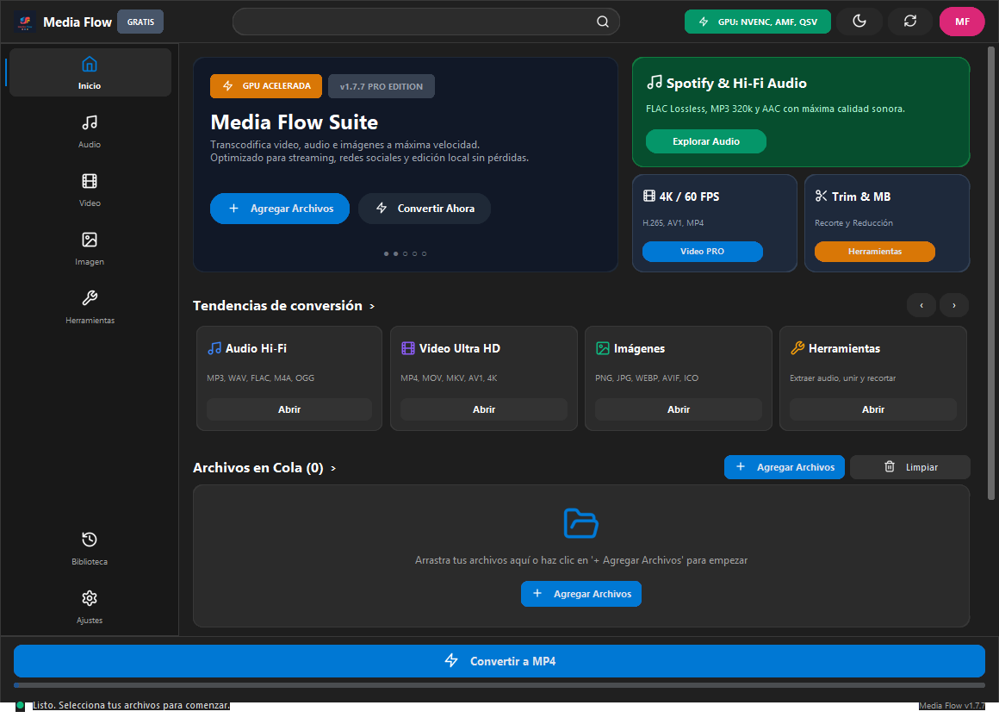

La suite de transcodificación multimedia más rápida y privada para Windows y Linux. Con aceleración por GPU por hardware y fidelidad acústica Lossless.

Aprovecha los núcleos dedicados de tu tarjeta gráfica NVIDIA GeForce, AMD Radeon o Intel Arc. Convierte videos extensos de horas en cuestión de segundos sin saturar tu procesador principal.
Compatible con FLAC, ALAC, OPUS y MP3 a 320 kbps. Claridad de espectro completo para amantes del sonido puro.
Reescala y ajusta la tasa de refresco a 24, 30 o 60 fps. Compatible con los formatos de vanguardia AV1 y H.265 para reducir el peso a la mitad con la misma nitidez.
Define el tiempo exacto de inicio y fin, o fija un tamaño en megabytes para que tus videos quepan sin problemas en Discord (25 MB), WhatsApp o correo electrónico.
Experimenta la velocidad y simplicidad de Media Flow con este simulador interactivo en tiempo real.
Descarga la versión nativa para tu sistema operativo. Sin registros forzados ni suscripciones ocultas.
Instalación recomendada con interfaz moderna Fluent WinUI 3 y aceleración automática por hardware.
Compatible con Ubuntu, Fedora, Arch, Debian y más en X11 y Wayland con notificaciones nativas de escritorio.
python3 linux_app.py para ejecutar directamente desde código fuente.